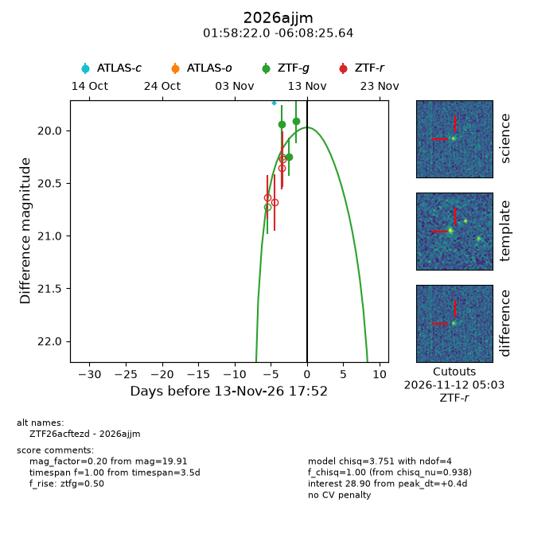
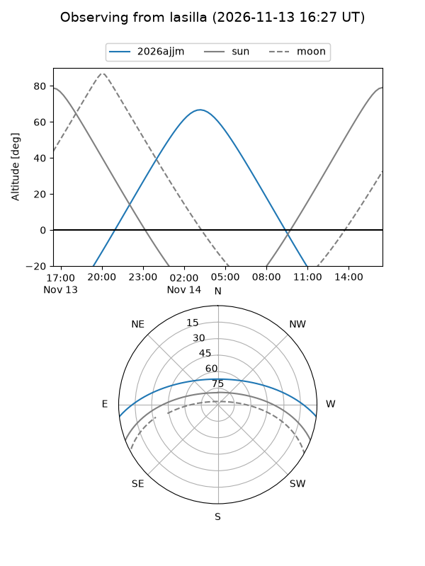
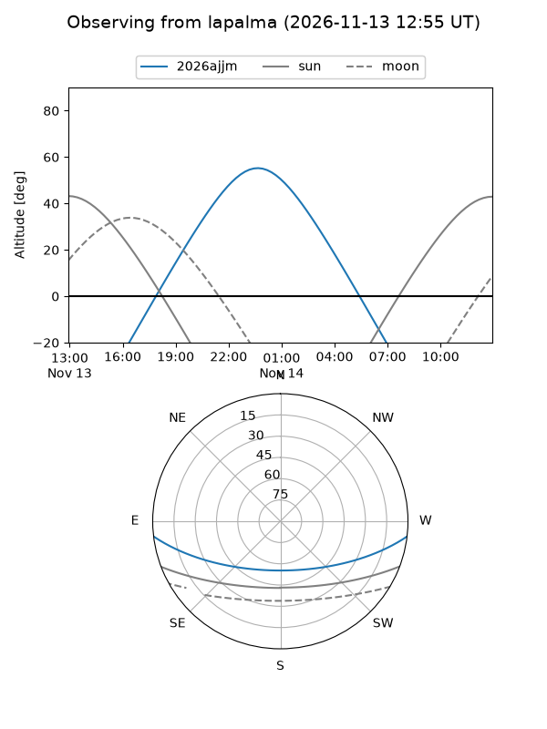
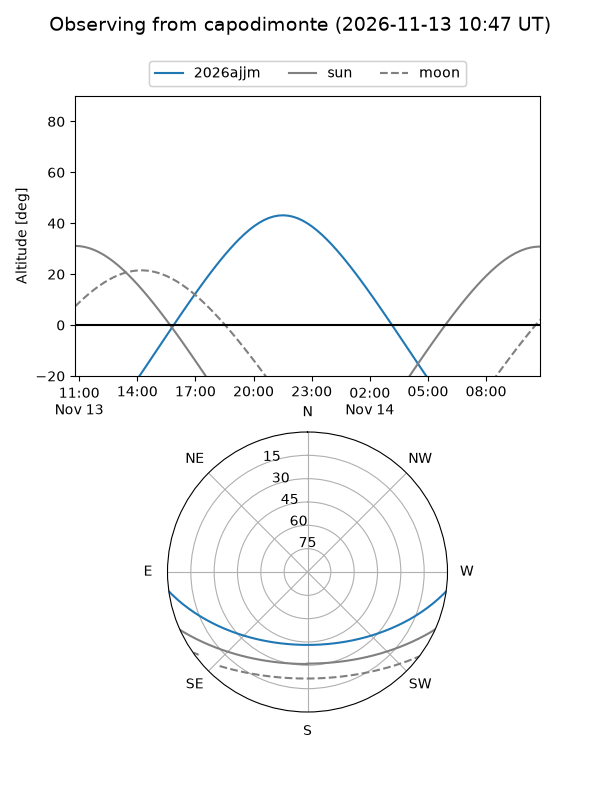
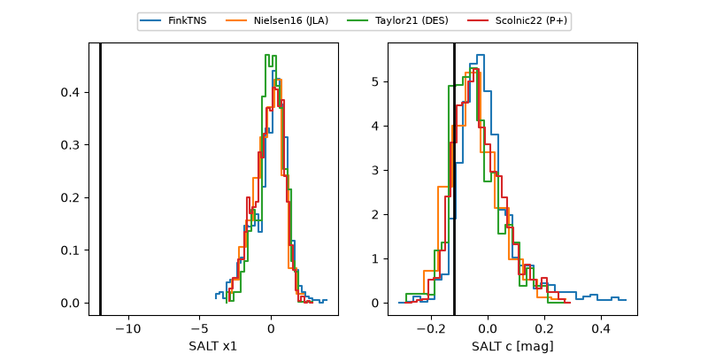

2026ajjm
Target 2026ajjm at 2026-11-13 17:58
Aliases and brokers:
FINK-ZTF: ztf.fink-portal.org/ZTF26acftezd
Lasair-ZTF: lasair-ztf.lsst.ac.uk/objects/ZTF26acftezd
ALeRCE-ZTF: alerce.online/object/ZTF26acftezd
YSE-PZ: ziggy.ucolick.org/yse/transient_detail/2026ajjm
TNS name: wis-tns.org/object/2026ajjm
Direct TNS query: direct search
alt names
ZTF26acftezd (ztf,fink_ztf)
2026ajjm (tns,yse)
Coordinates:
equatorial (ra, dec) = 29.5917,-6.14046
equatorial (HMS+DMS) = 01:58:22.01,-06:08:25.64
galactic (l, b) = (163.1114,-63.66189)
Flags:
peak dt: +0.4
Photometry:
last ztfg=19.91
3 ztfg detections
Lightcurve

Visibility



Additional plots
